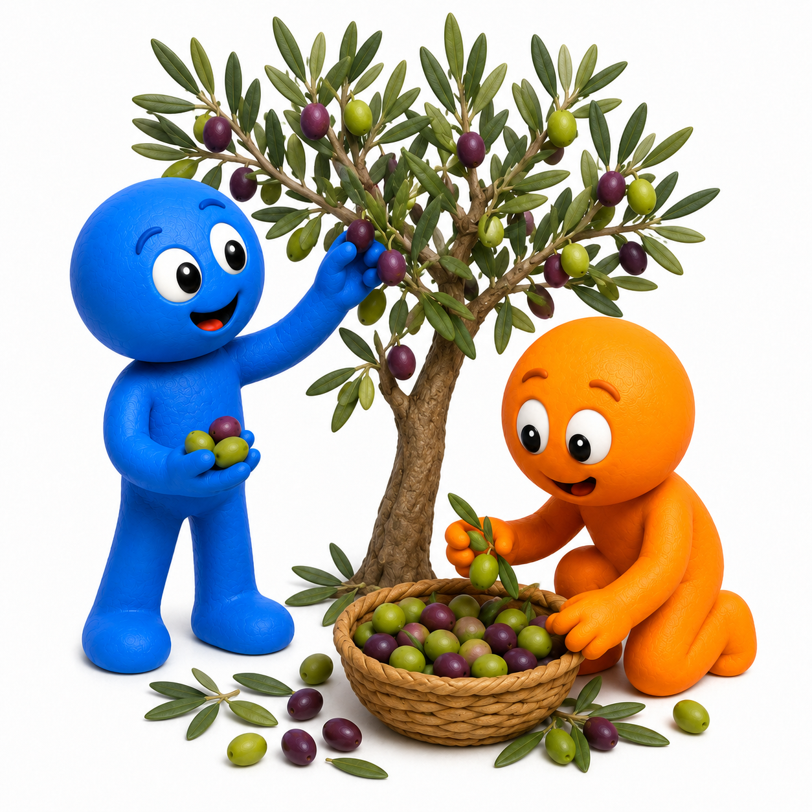
🖐️ A mano · By hand
Le olive si staccano dai rami e si mettono in cesti o cassette.
Dall'ulivo all'olio · From the olive tree to olive oil
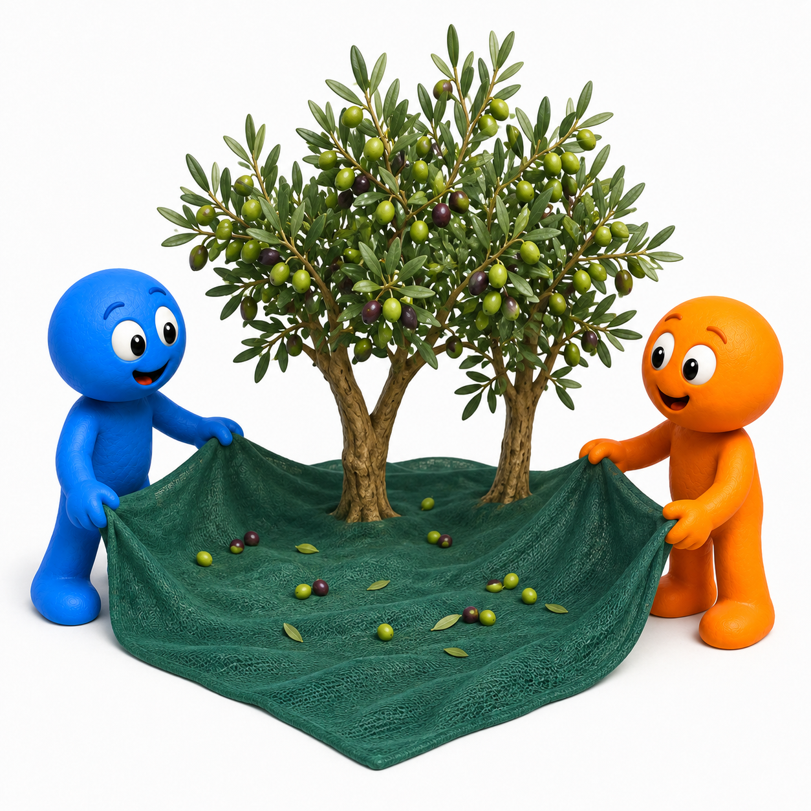
Italiano: In autunno, in molte zone d'Italia, si raccolgono le olive. Le olive crescono sugli ulivi. Si possono raccogliere a mano oppure con pettini e altri strumenti.
Sotto gli alberi si stendono grandi reti. Le olive cadono sulle reti e poi vengono messe nelle cassette. Le cassette vanno al frantoio, dove dalle olive si produce l'olio.
English: In autumn, olives are harvested in many parts of Italy. They may be picked by hand or with tools. Nets catch the olives under the trees, and the fruit is placed in crates before going to the olive mill.

Le olive si staccano dai rami e si mettono in cesti o cassette.
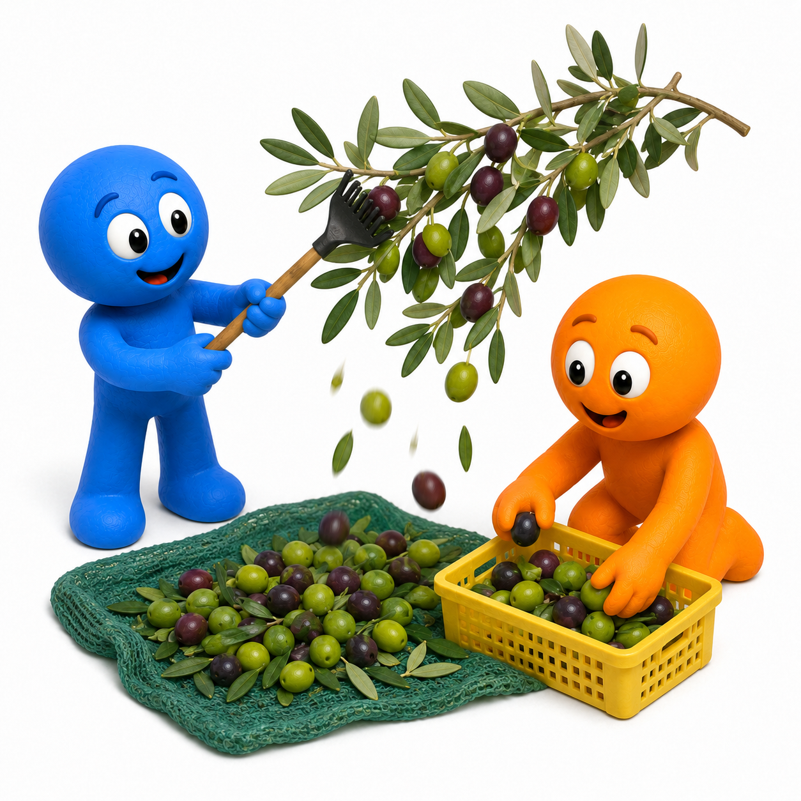
Pettini e altri strumenti aiutano a far cadere le olive sulle reti.
Oggi molti frantoi usano macchine collegate tra loro. Ogni macchina svolge una parte del lavoro.
In many modern olive mills, connected machines carry out the different steps of the process.
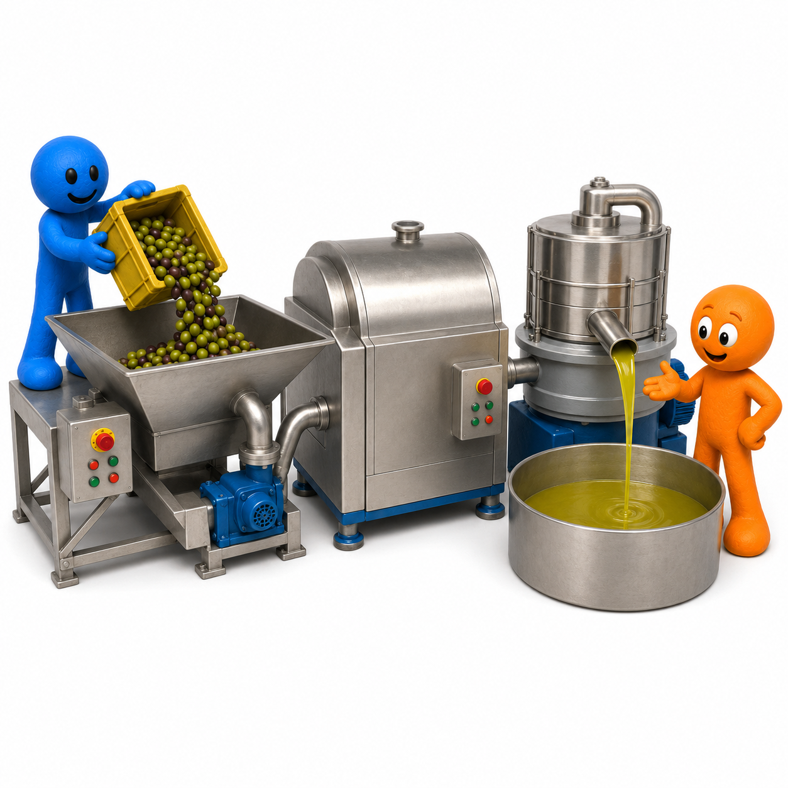
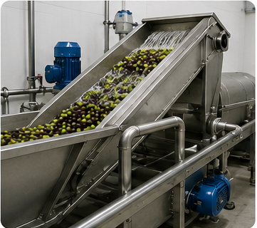
Si tolgono foglie e rametti. Poi le olive vengono lavate.
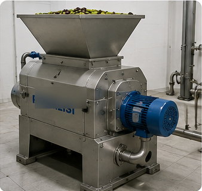
Il frangitore rompe le olive e crea una pasta.
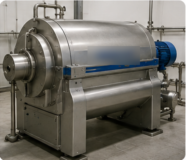
La gramolatrice mescola lentamente la pasta e aiuta le gocce d'olio a unirsi.
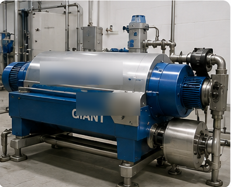
Il decanter orizzontale gira velocemente e separa l'olio dall'acqua e dalla parte solida.
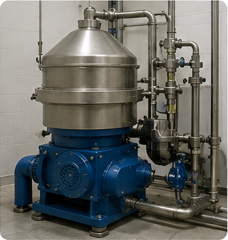
Il separatore verticale elimina altra acqua e piccole impurità.
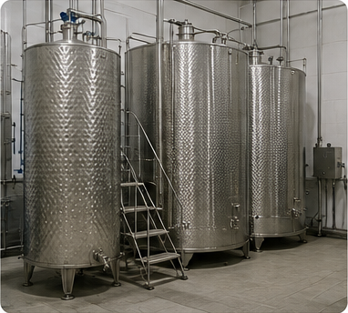
L'olio viene conservato in serbatoi di acciaio inox.
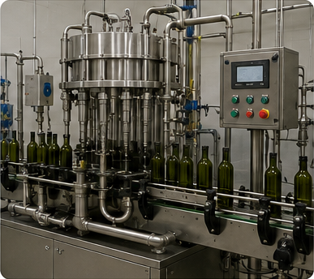
Infine l'olio viene imbottigliato.
Nota sulle immagini: le macchine possono avere forme diverse da un frantoio all'altro. Le immagini mostrano le principali fasi di una moderna linea di produzione.
💡 Lo sapevi? Nei frantoi moderni non si usa una pressa tradizionale. Dopo la frangitura e la gramolatura, la separazione avviene soprattutto con centrifughe.
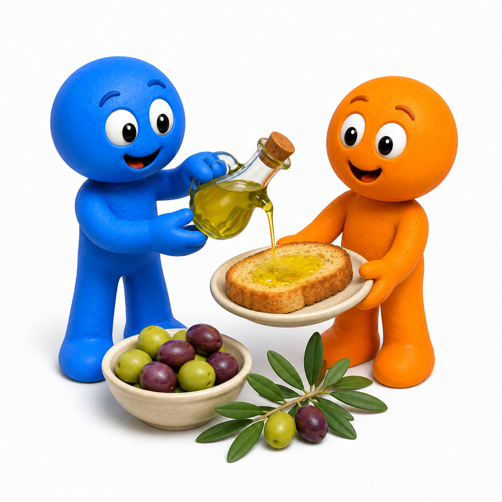
Quando si lavorano le olive della nuova raccolta, arriva l'olio nuovo: olio appena fatto.
In Umbria, Frantoi Aperti celebra questo periodo con visite ai frantoi, degustazioni e attività negli uliveti e nei borghi.
Fresh oil from the new harvest is called olio nuovo. In Umbria, Frantoi Aperti celebrates the season with mill visits, tastings, and activities in olive-growing communities.
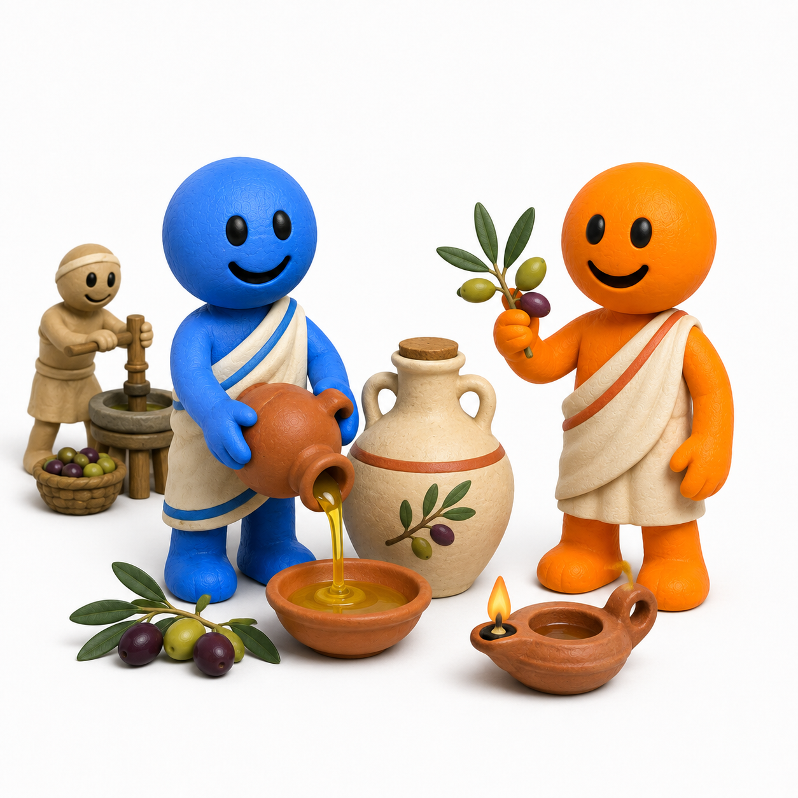
Nell'antica Roma, l'olio d'oliva serviva per mangiare, per alimentare le lucerne e per la cura del corpo.
Per produrlo, i Romani schiacciavano le olive con grandi macine. Poi pressavano la pasta e raccoglievano l'olio in recipienti di ceramica.
In ancient Rome, olive oil was used for food, lamps, and body care. Romans crushed the olives with stone equipment and then pressed the paste.
💡 Lo sapevi? Una grande macina romana per le olive si chiamava trapetum.
Perché si mettono le reti sotto gli ulivi?
Why are nets placed under olive trees?
Che cosa succede alle olive quando arrivano al frantoio?
What happens to the olives when they reach the mill?
Quali usi aveva l'olio d'oliva nell'antica Roma?
How was olive oil used in ancient Rome?